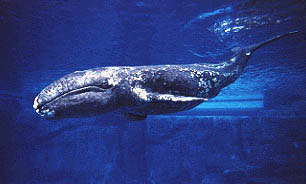
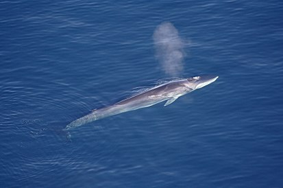
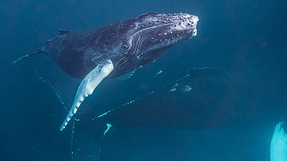

Энциклопедия животных
Киты
Киты (греч. κῆτος — «морское чудовище») — морские млекопитающие из инфраотряда китообразных, не относящиеся ни к дельфинам, ни к морским свиньям.
Синий кит(Блювал)

Синий кит — морское млекопитающее из инфраотряда китообразных, относящееся к семейству полосатиковых парвотряда усатых китов. Самый крупный кит, самое крупное современное животное, а также, вероятно, второе самое массивное из всех животных, когда-либо существовавших на Земле, известное на данный момент. Его длина достигает 33 метров, а масса может значительно превышать 150 тонн.
Серый кит
Серый кит — морское млекопитающее из парвотряда усатых китов. Они сохранили многие признаки далёких наземных предков, такие как: вибриссы на морде, удлинённый шейный отдел позвоночника с раздельными позвонками, подвижную голову, крупные носовые и увеличенные тазовые кости. Они также в меньшей степени утратили связь с землёй, так как держатся у побережья и размножаются в мелководных заливах.
Обыкновенный полосатик(Финвал)
Финва́л — вид китов из семейства полосатиковых. Является близким родственником синего кита и вторым по величине животным планеты. Финвалов и синих китов объединяет столь близкое родство, что иногда встречаются даже гибриды между этими видами.
Горбатый кит(Горбач)
Горба́ч, или горба́тый кит — вид морских млекопитающих семейства полосатиковых китов парвотряда усатых китов. Единственный современный вид рода горбатых китов (Megaptera). Своё название получил либо из-за спинного плавника, формой напоминающего горб, либо от привычки при плавании сильно выгибать спину.